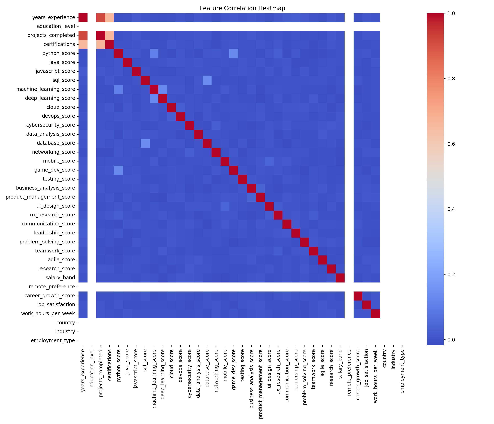
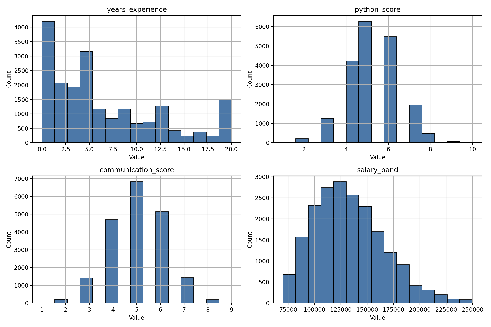

Dataset: datasets\synthetic\synthetic_dataset_v2.csv
| Check | Status | Details |
|---|---|---|
| missing_values | fail | {"missing_by_column": {"career": 0, "years_experience": 0, "education_level": 20000, "projects_completed": 0, "certifications": 0, "python_score": 0, "java_score": 0, "javascript_score": 0, "sql_score": 0, "machine_learning_score": 0, "deep_learning_score": 0, "cloud_score": 0, "devops_score": 0, "cybersecurity_score": 0, "data_analysis_score": 0, "database_score": 0, "networking_score": 0, "mobile_score": 0, "game_dev_score": 0, "testing_score": 0, "business_analysis_score": 0, "product_management_score": 0, "ui_design_score": 0, "ux_research_score": 0, "communication_score": 0, "leadership_score": 0, "problem_solving_score": 0, "teamwork_score": 0, "agile_score": 0, "research_score": 0, "salary_band": 0, "remote_preference": 20000, "career_growth_score": 0, "job_satisfaction": 0, "work_hours_per_week": 0, "country": 20000, "industry": 20000, "employment_type": 20000}, "missing_rows": 20000, "status": "fail"} |
| duplicate_rows | pass | {"duplicate_count": 0, "status": "pass"} |
| class_balance | pass | {"counts": {"Data Scientist": 1000, "ML Engineer": 1000, "Database Administrator": 1000, "Backend Developer": 1000, "Network Engineer": 1000, "UI/UX Designer": 1000, "Cloud Engineer": 1000, "AI Research Engineer": 1000, "Game Developer": 1000, "Product Manager": 1000, "Ethical Hacker": 1000, "Full Stack Developer": 1000, "Mobile App Developer": 1000, "Software Engineer": 1000, "QA Engineer": 1000, "Business Analyst": 1000, "Data Engineer": 1000, "Cyber Security Analyst": 1000, "DevOps Engineer": 1000, "Frontend Developer": 1000}, "balance_ratio": 0.05, "status": "pass"} |
| career_balance | pass | {"expected_per_career": 1000, "counts": {"Software Engineer": 1000, "Backend Developer": 1000, "Frontend Developer": 1000, "Full Stack Developer": 1000, "Mobile App Developer": 1000, "Data Scientist": 1000, "ML Engineer": 1000, "Data Engineer": 1000, "AI Research Engineer": 1000, "DevOps Engineer": 1000, "Cloud Engineer": 1000, "Cyber Security Analyst": 1000, "Ethical Hacker": 1000, "Network Engineer": 1000, "UI/UX Designer": 1000, "Product Manager": 1000, "Business Analyst": 1000, "QA Engineer": 1000, "Database Administrator": 1000, "Game Developer": 1000}, "deviations": {"Software Engineer": 0, "Backend Developer": 0, "Frontend Developer": 0, "Full Stack Developer": 0, "Mobile App Developer": 0, "Data Scientist": 0, "ML Engineer": 0, "Data Engineer": 0, "AI Research Engineer": 0, "DevOps Engineer": 0, "Cloud Engineer": 0, "Cyber Security Analyst": 0, "Ethical Hacker": 0, "Network Engineer": 0, "UI/UX Designer": 0, "Product Manager": 0, "Business Analyst": 0, "QA Engineer": 0, "Database Administrator": 0, "Game Developer": 0}, "status": "pass"} |
| feature_ranges | fail | {"issues": [{"column": "years_experience", "expected_range": [1, 12], "out_of_range_rows": 5457}, {"column": "projects_completed", "expected_range": [3, 25], "out_of_range_rows": 4798}, {"column": "certifications", "expected_range": [0, 4], "out_of_range_rows": 1861}, {"column": "python_score", "expected_range": [4, 8], "out_of_range_rows": 1591}, {"column": "java_score", "expected_range": [3, 8], "out_of_range_rows": 287}, {"column": "javascript_score", "expected_range": [5, 9], "out_of_range_rows": 6343}, {"column": "sql_score", "expected_range": [5, 9], "out_of_range_rows": 6234}, {"column": "machine_learning_score", "expected_range": [1, 5], "out_of_range_rows": 7594}, {"column": "deep_learning_score", "expected_range": [1, 3], "out_of_range_rows": 18193}, {"column": "cloud_score", "expected_range": [3, 8], "out_of_range_rows": 263}, {"column": "devops_score", "expected_range": [2, 7], "out_of_range_rows": 281}, {"column": "cybersecurity_score", "expected_range": [1, 5], "out_of_range_rows": 6505}, {"column": "data_analysis_score", "expected_range": [3, 7], "out_of_range_rows": 523}, {"column": "database_score", "expected_range": [4, 8], "out_of_range_rows": 1861}, {"column": "networking_score", "expected_range": [2, 6], "out_of_range_rows": 1925}, {"column": "testing_score", "expected_range": [4, 8], "out_of_range_rows": 1860}, {"column": "business_analysis_score", "expected_range": [2, 6], "out_of_range_rows": 1965}, {"column": "product_management_score", "expected_range": [1, 5], "out_of_range_rows": 6553}, {"column": "ui_design_score", "expected_range": [2, 5], "out_of_range_rows": 6940}, {"column": "ux_research_score", "expected_range": [1, 4], "out_of_range_rows": 13504}, {"column": "communication_score", "expected_range": [6, 9], "out_of_range_rows": 13190}, {"column": "leadership_score", "expected_range": [3, 8], "out_of_range_rows": 272}, {"column": "problem_solving_score", "expected_range": [7, 10], "out_of_range_rows": 18221}, {"column": "teamwork_score", "expected_range": [6, 9], "out_of_range_rows": 13505}, {"column": "agile_score", "expected_range": [4, 8], "out_of_range_rows": 1785}, {"column": "research_score", "expected_range": [3, 7], "out_of_range_rows": 491}, {"column": "salary_band", "expected_range": [85000, 160000], "out_of_range_rows": 4877}], "status": "fail"} |
| impossible_combinations | pass | {"issues": [], "status": "pass"} |
| outliers | fail | {"outliers": [{"column": "python_score", "count": 4, "lower_bound": 1.0, "upper_bound": 9.0}, {"column": "java_score", "count": 1, "lower_bound": 1.0, "upper_bound": 9.0}, {"column": "javascript_score", "count": 1, "lower_bound": 1.0, "upper_bound": 9.0}, {"column": "machine_learning_score", "count": 2, "lower_bound": 1.0, "upper_bound": 9.0}, {"column": "deep_learning_score", "count": 2, "lower_bound": 1.0, "upper_bound": 9.0}, {"column": "devops_score", "count": 1, "lower_bound": 1.0, "upper_bound": 9.0}, {"column": "cybersecurity_score", "count": 1, "lower_bound": 1.0, "upper_bound": 9.0}, {"column": "database_score", "count": 2, "lower_bound": 1.0, "upper_bound": 9.0}, {"column": "business_analysis_score", "count": 2, "lower_bound": 1.0, "upper_bound": 9.0}, {"column": "ui_design_score", "count": 1, "lower_bound": 1.0, "upper_bound": 9.0}, {"column": "leadership_score", "count": 1, "lower_bound": 1.0, "upper_bound": 9.0}, {"column": "problem_solving_score", "count": 1, "lower_bound": 1.0, "upper_bound": 9.0}, {"column": "research_score", "count": 2, "lower_bound": 1.0, "upper_bound": 9.0}, {"column": "salary_band", "count": 209, "lower_bound": 39327.38, "upper_bound": 222344.38}], "status": "fail"} |

